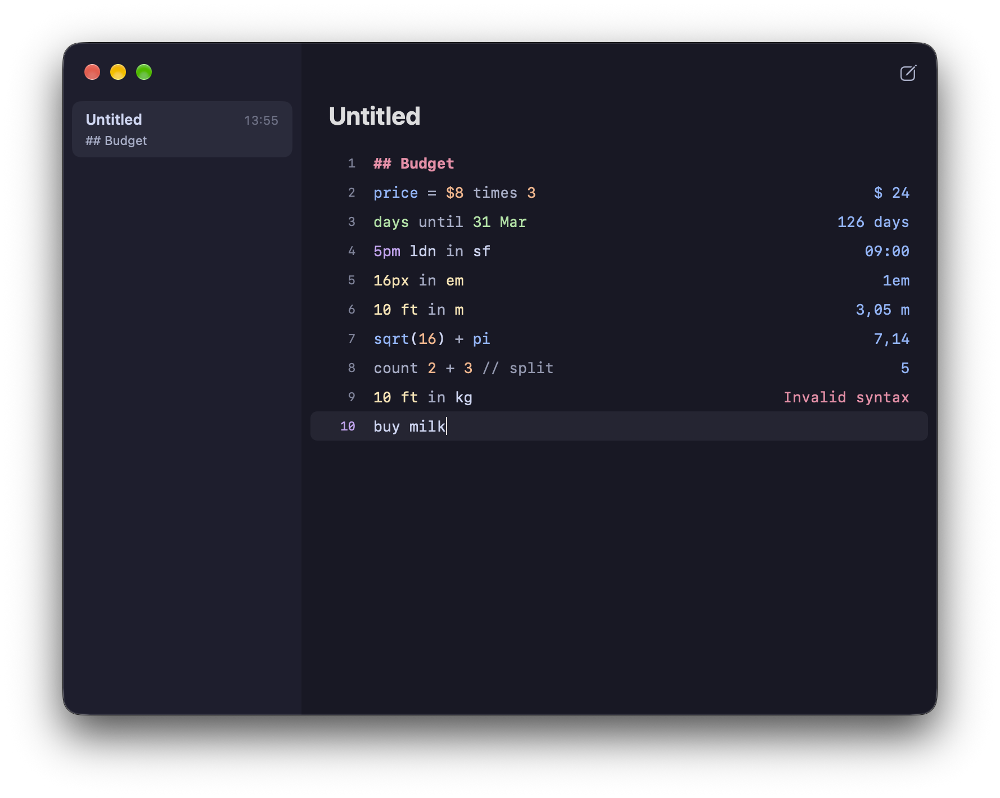

Solvr
A beautiful text calculator for Mac. You type a line, and the result shows up next to it.
Install with Homebrew
The text is the calculator
A sheet can hold a quick conversion during work or a budget you keep for months, because earlier lines and variables keep their meaning until you delete them.
What it does
Conversions
Units, currencies, and cryptocurrencies, with exchange rates that update over the internet.
Time zones
Convert a time by time zone abbreviation or by city name.
Saved sheets
Each sheet saves after every change, so there is no save button, and you can edit it without an internet connection.
Total and errors
The total appears below the content. A line that cannot be calculated shows the reason, and the rest of the sheet keeps working.
Install
Install it with Homebrew:
brew install --cask adeonir/tap/solvrYou can also download the zip from the releases page, unzip it, and move Solvr.app to Applications.
Solvr needs macOS 26 or later and runs on Apple Silicon and Intel Macs.